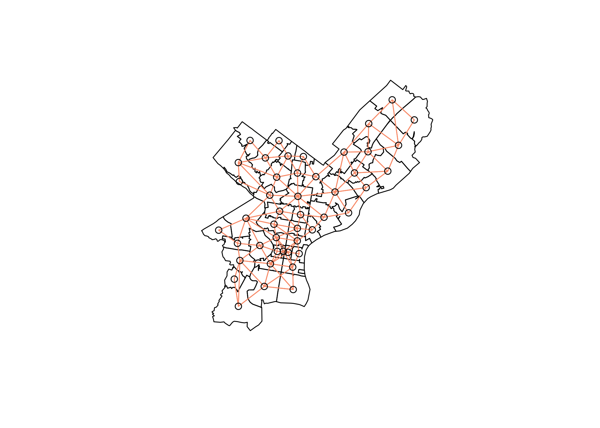
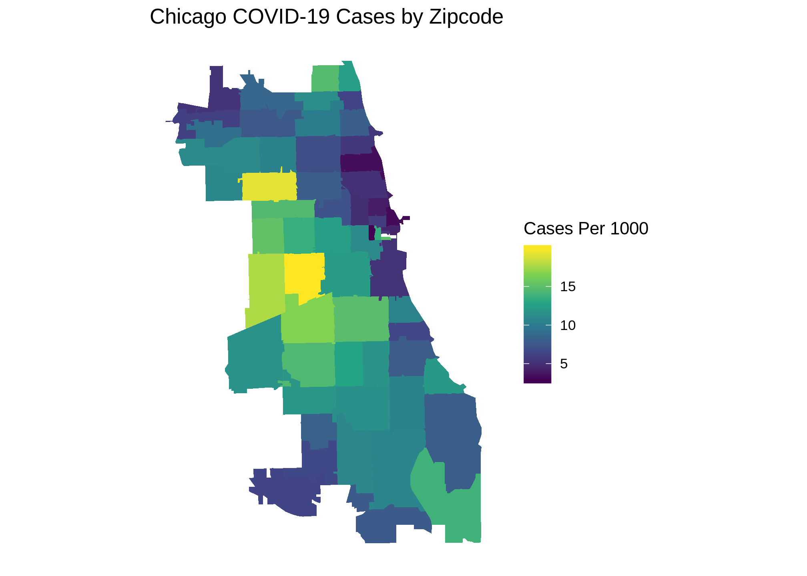
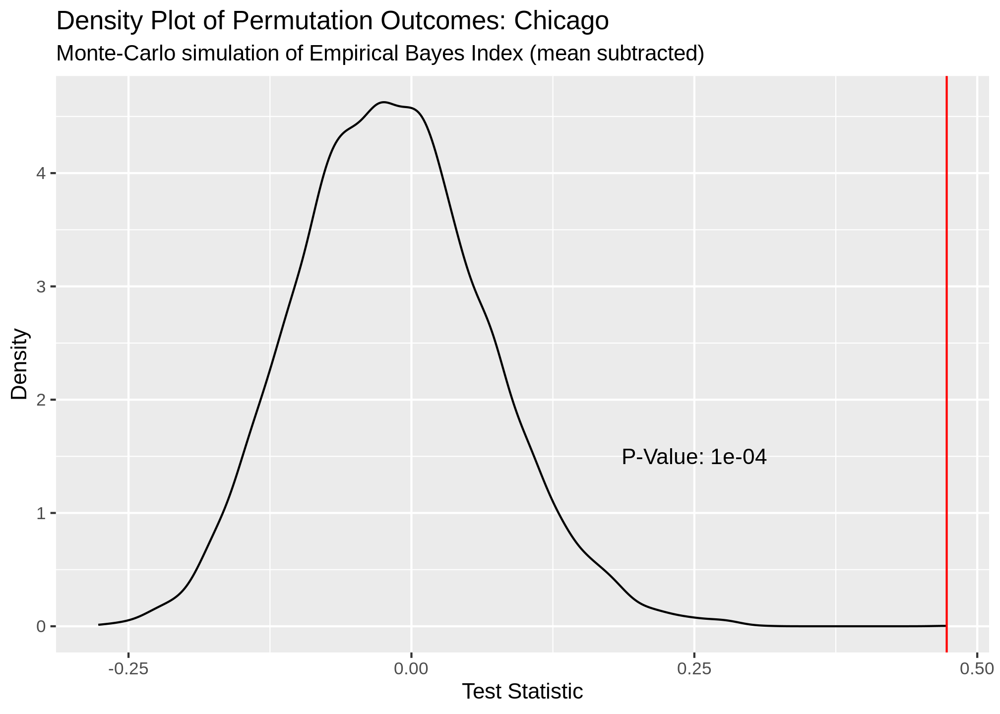
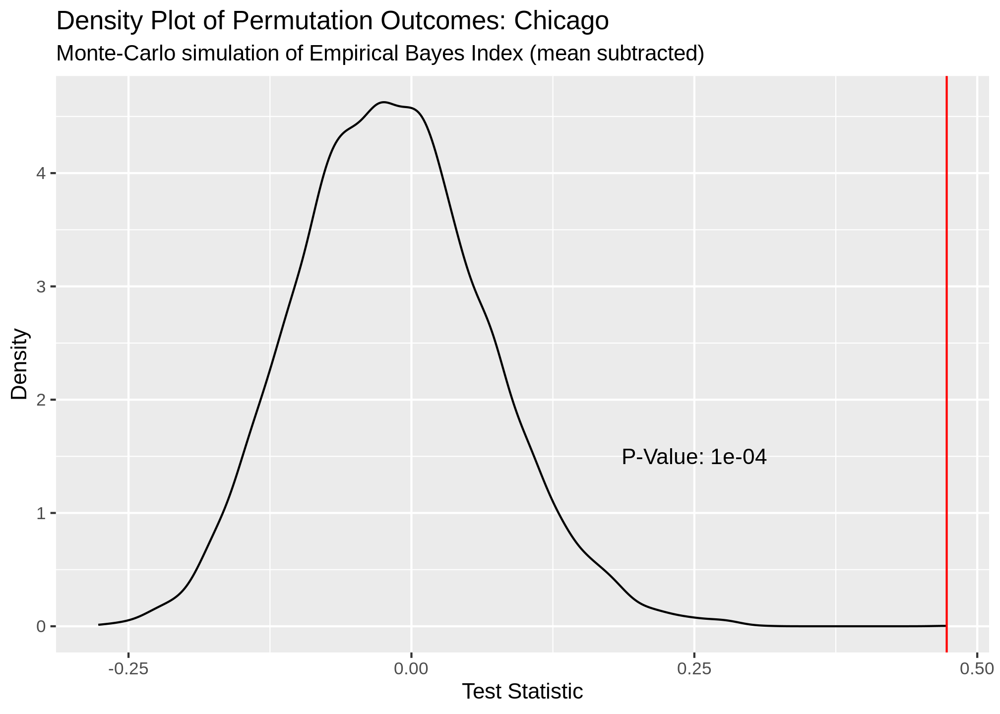
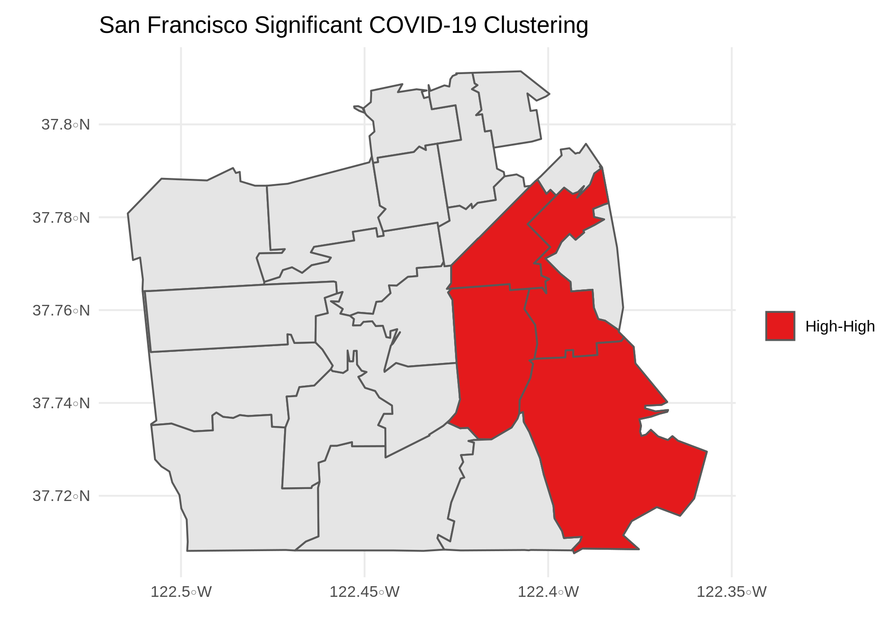
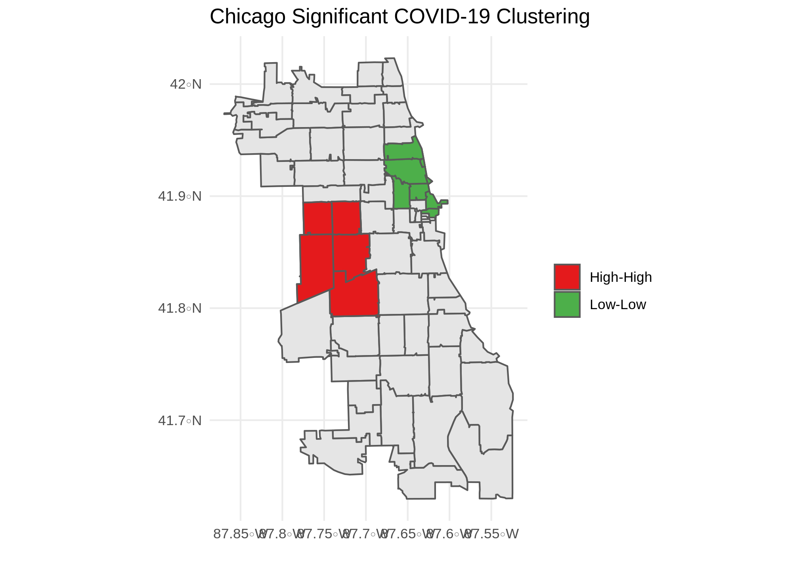
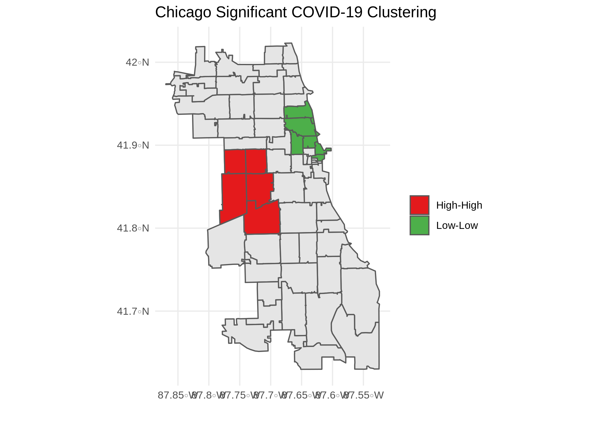

Finding COVID-19 Clusters Using R
COVID-19 data analyses are all the rage at the moment, with COVID datasets being made publicly available at the city, state, and national level. It’s an awesome example of how open data can lead to a better understanding of the world around us. And, the best part is, much of the actual analyses are free! I decided to take a stab it and contribute to the public COVID discorse with my own analysis below.
Wrangling Geospatial Data
Moran’s I
Philadelphia Example
phila_covid_sf %>%
ggplot() +
geom_sf(aes(fill = cases_per_cap)) +
scale_fill_gradient(low = "#FFF5F0" , high = "#A50F15", name = "Cases Per 1000") +
labs(title = "Philadelphia COVID-19 Cases Per Capita")library(spdep)
## Autocorrelation tests for phila
phila_sp <- as(phila_covid_sf, "Spatial")
phila_nb <- poly2nb(phila_sp, queen = T, row.names = phila_sp$zip)
coords <- coordinates(phila_sp)
plot(phila_sp)
plot(phila_nb, coords = coords, add = T, col = "#F78764")
## EBI Morans I
set.seed(1988)
phila_moran_mc <- EBImoran.mc(n = phila_sp$cases,
x = phila_sp$pop,
listw = nb2listw(phila_nb, style = "W"),
nsim = 9999)
phila_moran_mc##
## Monte-Carlo simulation of Empirical Bayes Index (mean subtracted)
##
## data: cases: phila_sp$cases, risk population: phila_sp$pop
## weights: nb2listw(phila_nb, style = "W")
## number of simulations + 1: 10000
##
## statistic = 0.07143, observed rank = 8479, p-value = 0.1521
## alternative hypothesis: greaterplot(phila_moran_mc)phila_lc_moran <- localmoran(phila_sp$cases_per_cap,
listw = nb2listw(phila_nb, style = "W"),
p.adjust.method = "bonferroni",
alternative = "two.sided")
phila_lc_moran_tidy <- broom::tidy(phila_lc_moran) %>%
rename(p_value = 6 ,zip = .rownames, morans_i = 2, z_score = 5) %>%
select(zip, morans_i, z_score, p_value) %>%
mutate(morans_i = round(morans_i,3),
z_score = round(z_score,3),
p_value = round(p_value,3),
lag_cases_per_cap = round(lag.listw(var = phila_sp$cases_per_cap, x = nb2listw(phila_nb, style = "W")),3),
lag_mean = round(mean(lag.listw(var = phila_sp$cases_per_cap, x = nb2listw(phila_nb, style = "W"))),3)
)head(phila_lc_moran_tidy)## # A tibble: 6 x 6
## zip morans_i z_score p_value lag_cases_per_cap lag_mean
## <chr> <dbl> <dbl> <dbl> <dbl> <dbl>
## 1 19123 -1.78 -5.24 0 8.71 11.2
## 2 19127 1.92 2.05 0.081 6.89 11.2
## 3 19137 0.891 1.70 0.352 9.25 11.2
## 4 19106 -0.84 -1.53 0.506 13.6 11.2
## 5 19134 0.570 1.46 0.866 8.24 11.2
## 6 19154 -0.656 -1.18 0.944 14.4 11.2

Functional Programming to Test Many Locations


 

 

##Functional Programming version
sf_plot <- function(data, loc) {
data %>%
ggplot() +
geom_sf(aes(fill = cases_per_cap)) +
scale_fill_gradient(low = "#FFF5F0" , high = "#A50F15", name = "Cases Per 1000") +
labs(title = paste0(loc," COVID-19 Cases by Zipcode"))
}
#function to create global moran density plots
global_morans_plot <- function(data, loc){
tibble::enframe(data$res) %>%
ggplot(aes(x = value)) +
geom_line(stat = "density") +
geom_vline(xintercept = data$statistic, col = "red") +
annotate(geom = "text",x = .25, y = 1.5, label = paste0("P-Value: ",data$p.value)) +
labs(title = paste0("Density Plot of Permutation Outcomes: ",loc),
subtitle = "Monte-Carlo simulation of Empirical Bayes Index (mean subtracted)",
x = "Test Statistic",
y = "Density")
}
#function to create tidy local morans tibble
local_morans_tidy <- function(lm, sp, sf){
broom::tidy(lm) %>%
rename(p_value = 6 ,zip = .rownames, morans_i = 2, z_score = 5) %>%
inner_join(sf, by = c("zip"="zip")) %>%
mutate(lag_cases_per_cap = spdep::lag.listw(var = sp$cases_per_cap, x = spdep::nb2listw(spdep::poly2nb(sp,queen = T))),
lag_mean = mean(lag_cases_per_cap),
cases_mean = mean(lag_cases_per_cap),
quad = case_when(
cases_per_cap < cases_mean & lag_cases_per_cap < lag_mean ~ "Low-Low",
cases_per_cap < cases_mean & lag_cases_per_cap >= lag_mean ~ "Low-High",
cases_per_cap >= cases_mean & lag_cases_per_cap < lag_mean ~ "High-Low",
cases_per_cap >= cases_mean & lag_cases_per_cap >= lag_mean ~ "High-High"
))
}
## Function to create local morans plots
local_morans_plots <- function(lm_tidied, loc){
ggplot() +
geom_sf(data = sf::st_as_sf(lm_tidied)) +
geom_sf(data = sf::st_as_sf(lm_tidied) %>% filter(p_value <= .1), aes(fill = quad)) +
scale_fill_manual(values = c("Low-Low"="#4DAF4A" ,"Low-High"="#377EB8","High-Low"="#FF7F00","High-High"="#E41A1C")) +
labs(title = paste0(loc," Significant COVID-19 Clustering"), x = "", y = "", fill = "")
}
#sombine sf objects into a tibble with nested lists
covid_tibble <- tibble(
location = c("San Francisco", "Philadelphia","Chicago"),
covid_sf = list(sf_covid_sf,
phila_covid_sf,
chi_covid_sf)
)
morans_results <- covid_tibble %>%
##perform global morans I calculation with MC simulations
mutate(
covid_map = map2(covid_sf,location,sf_plot),
covid_sp = map(covid_sf, ~as(., "Spatial")), ##create sp object
global_morans = map(covid_sp, ~ spdep::EBImoran.mc(n = .$cases,
x = .$pop,
listw = spdep::nb2listw(spdep::poly2nb(.,queen = T, row.names = .$zip)),
nsim = 9999)), ##run global morans I test
global_morans_tidied = map(global_morans, broom::tidy), ##Create output plots
global_moran_plots = map2(global_morans,location,global_morans_plot)) %>% #perform local morans I calculations
##Perform local morans I calculations
mutate(
local_morans = map(covid_sp, ~ spdep::localmoran(x = .$cases_per_cap,
listw = spdep::nb2listw(spdep::poly2nb(.,queen = T, row.names = .$zip)),
p.adjust.method = "bonferroni")), ##run local morans I
local_morans_tidied = pmap(list(local_morans, covid_sp, covid_sf), local_morans_tidy), ##tidy the local morans I output
local_morans_plots = map2(local_morans_tidied,location,local_morans_plots) ##Create output plots
)Dennis Sobolewski
Data Scientist
My research interests include distributed robotics, mobile computing and programmable matter.